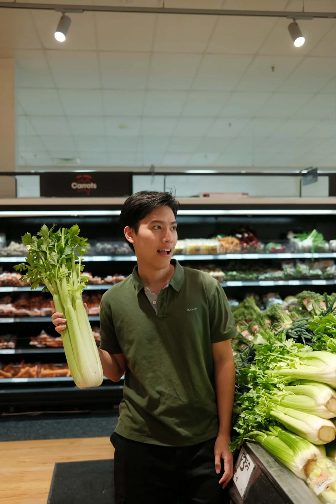
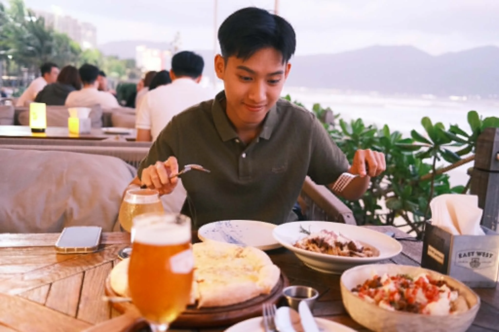
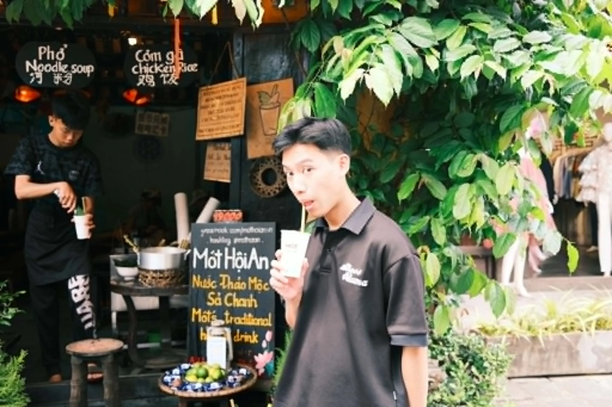

About me
Hi, I’m Vigo.
Beyond the projects.
I’m from Vietnam.
Now at home in Brisbane.
I work on data and cloud projects. Away from the screen, I like travelling, finding new places to eat and taking photos.
I enjoy dressing well.
I don’t mind a silly photo either.



The everyday side
Good food.
Funny photos.
I enjoy going out for a meal and trying food I haven’t had before. I take photos along the way, and I like keeping the funny ones too.
A change of scenery
A little
further afield.
I’ve travelled to Đà Nẵng, Huế and Hội An. I like exploring a place, trying the food and stopping for a photo when something catches my eye.


Working with me
Listen first.
Build together.
I’m easygoing and I like a laugh. In a team, I try to listen before jumping in, ask questions when I’m unsure, and take feedback seriously.
I’m looking for an internship or graduate role in Data or Cloud Engineering. I’d like to join a team that shares ideas, gives useful feedback and takes care with its work.


The foundations
Always learning.

Truong Lieu Dong (Vigo) DangData & Cloud EngineeringBrisbane, Australia
Expected graduation · July 2027
Queensland University of Technology
Bachelor of Data Science
Minor: Advanced Computing for Data Science
2024 Executive Dean’s Commendation for Academic Excellence (Semester 2 teaching period cluster)
Technical skillsProgramming, cloud & machine learning
My projects span desktop prediction workflows, asynchronous cloud processing and source-linked retrieval.
- Programming & data
- Python, SQL, R, C++17, C#, JavaScript/Node.js; Pandas, NumPy, MySQL, DynamoDB
- Machine learning
- scikit-learn, XGBoost, LightGBM; classification, regression, model evaluation
- Deep Learning & AI
- PyTorch, TensorFlow; neural networks, embeddings, RAG
- Cloud & backend
- AWS S3, Lambda, API Gateway, Cognito, SQS, ECS/Fargate, CloudWatch; REST APIs, Docker
- Tools & delivery
- Git/GitHub, Linux, automated testing, Power BI, PyQt6, data visualisation
My deep learning work includes RGB and elevation inputs, a TensorFlow/Keras segmentation model and tiled inference for drone imagery.
View the segmentation implementation